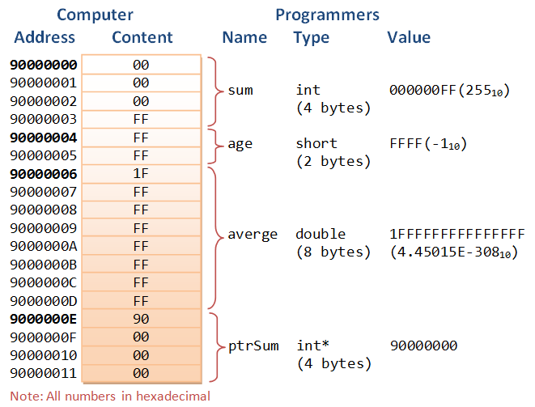
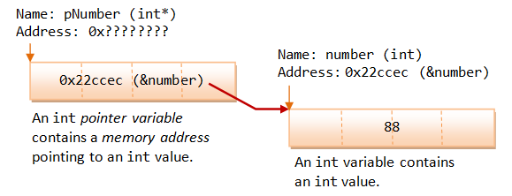
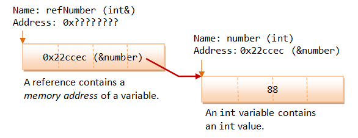

Pointers, References and Dynamic Memory Allocation are the most powerful features in C/C++ language, which allows programmers to directly manipulate memory to efficiently manage the memory - the most critical and scarce resource in computer - for best performance. However, "pointer" is also the most complex and difficult feature in C/C++ language.
Pointers are extremely powerful because they allows you to access addresses and manipulate their contents. But they are also extremely complex to handle. Using them correctly, they could greatly improve the efficiency and performance. On the other hand, using them incorrectly could lead to many problems, from un-readable and un-maintainable codes, to infamous bugs such as memory leaks and buffer overflow, which may expose your system to hacking. Many new languages (such as Java and C#) remove pointer from their syntax to avoid the pitfalls of pointers, by providing automatic memory management.
Although you can write C/C++ programs without using pointers, however, it is difficult not to mention pointer in teaching C/C++ language. Pointer is probably not meant for novices and dummies.
Pointer Variables
A computer memory location has an address and holds a content. The address is a numerical number (often expressed in hexadecimal), which is hard for programmers to use directly. Typically, each address location holds 8-bit (i.e., 1-byte) of data. It is entirely up to the programmer to interpret the meaning of the data, such as integer, real number, characters or strings.
To ease the burden of programming using numerical address and programmer-interpreted data, early programming languages (such as C) introduce the concept of variables. A variable is a named location that can store a value of a particular type. Instead of numerical addresses, names (or identifiers) are attached to certain addresses. Also, types (such as int, double, char) are associated with the contents for ease of interpretation of data.
Each address location typically hold 8-bit (i.e., 1-byte) of data. A 4-byte int value occupies 4 memory locations. A 32-bit system typically uses 32-bit addresses. To store a 32-bit address, 4 memory locations are required.
The following diagram illustrate the relationship between computers' memory address and content; and variable's name, type and value used by the programmers.
Pointer Variables (or Pointers)
A pointer variable (or pointer in short) is basically the same as the other variables, which can store a piece of data. Unlike normal variable which stores a value (such as an int, a double, a char), a pointer stores a memory address.
Declaring Pointers
Pointers must be declared before they can be used, just like a normal variable. The syntax of declaring a pointer is to place a * in front of the name. A pointer is associated with a type (such as int and double) too.
type *ptr; // Declare a pointer variable called ptr as a pointer of type // or type* ptr; // or type * ptr; // I shall adopt this convention
For example,
int * iPtr; // Declare a pointer variable called iPtr pointing to an int (an int pointer) // It contains an address. That address holds an int value. double * dPtr; // Declare a double pointer
Take note that you need to place a * in front of each pointer variable, in other words, * applies only to the name that followed. The * in the declaration statement is not an operator, but indicates that the name followed is a pointer variable. For example,
int *p1, *p2, i; // p1 and p2 are int pointers. i is an int int* p1, p2, i; // p1 is a int pointer, p2 and i are int int * p1, * p2, i; // p1 and p2 are int pointers, i is an int
Naming Convention of Pointers: Include a "p" or "ptr" as prefix or suffix, e.g., iPtr, numberPtr, pNumber, pStudent.
Initializing Pointers via the Address-Of Operator (&)
When you declare a pointer variable, its content is not initialized. In other words, it contains an address of "somewhere", which is of course not a valid location. This is dangerous! You need to initialize a pointer by assigning it a valid address. This is normally done via the address-of operator (&).
The address-of operator (&) operates on a variable, and returns the address of the variable. For example, if number is an int variable, &number returns the address of the variable number.
You can use the address-of operator to get the address of a variable, and assign the address to a pointer variable. For example,
int number = 88; // An int variable with a value int * pNumber; // Declare a pointer variable called pNumber pointing to an int (or int pointer) pNumber = &number; // Assign the address of the variable number to pointer pNumber int * pAnother = &number; // Declare another int pointer and init to address of the variable number
As illustrated, the int variable number, starting at address 0x22ccec, contains an int value 88. The expression &number returns the address of the variable number, which is 0x22ccec. This address is then assigned to the pointer variable pNumber, as its initial value.
The address-of operator (&) can only be used on the RHS.
Indirection or Dereferencing Operator (*)
The indirection operator (or dereferencing operator) (*) operates on a pointer, and returns the value stored in the address kept in the pointer variable. For example, if pNumber is an int pointer, *pNumber returns the int value "pointed to" by pNumber.
For example,
int number = 88; int * pNumber = &number; // Declare and assign the address of variable number to pointer pNumber (0x22ccec) cout << pNumber<< endl; // Print the content of the pointer variable, which contain an address (0x22ccec) cout << *pNumber << endl; // Print the value "pointed to" by the pointer, which is an int (88) *pNumber = 99; // Assign a value to where the pointer is pointed to, NOT to the pointer variable cout << *pNumber << endl; // Print the new value "pointed to" by the pointer (99) cout << number << endl; // The value of variable number changes as well (99)
Take note that pNumber stores a memory address location, whereas *pNumber refers to the value stored in the address kept in the pointer variable, or the value pointed to by the pointer.
As illustrated, a variable (such as number) directly references a value, whereas a pointer indirectly references a value through the memory address it stores. Referencing a value indirectly via a pointer is called indirection or dereferencing.
The indirection operator (*) can be used in both the RHS (temp = *pNumber) and the LHS (*pNumber = 99) of an assignment statement.
Take note that the symbol * has different meaning in a declaration statement and in an expression. When it is used in a declaration (e.g., int * pNumber), it denotes that the name followed is a pointer variable. Whereas when it is used in a expression (e.g., *pNumber = 99; temp << *pNumber;), it refers to the value pointed to by the pointer variable.
Pointer has a Type Too
A pointer is associated with a type (of the value it points to), which is specified during declaration. A pointer can only hold an address of the declared type; it cannot hold an address of a different type.
int i = 88; double d = 55.66; int * iPtr = &i; // int pointer pointing to an int value double * dPtr = &d; // double pointer pointing to a double value iPtr = &d; // ERROR, cannot hold address of different type dPtr = &i; // ERROR iPtr = i; // ERROR, pointer holds address of an int, NOT int value int j = 99; iPtr = &j; // You can change the address stored in a pointer
Example
1 2 3 4 5 6 7 8 9 10 11 12 13 14 15 16 17 18 19 20 21 22 23 |
/* Test pointer declaration and initialization (TestPointerInit.cpp) */ #include <iostream> using namespace std; int main() { int number = 88; // Declare an int variable and assign an initial value int * pNumber; // Declare a pointer variable pointing to an int (or int pointer) pNumber = &number; // assign the address of the variable number to pointer pNumber cout << pNumber << endl; // Print content of pNumber (0x22ccf0) cout << &number << endl; // Print address of number (0x22ccf0) cout << *pNumber << endl; // Print value pointed to by pNumber (88) cout << number << endl; // Print value of number (88) *pNumber = 99; // Re-assign value pointed to by pNumber cout << pNumber << endl; // Print content of pNumber (0x22ccf0) cout << &number << endl; // Print address of number (0x22ccf0) cout << *pNumber << endl; // Print value pointed to by pNumber (99) cout << number << endl; // Print value of number (99) // The value of number changes via pointer cout << &pNumber << endl; // Print the address of pointer variable pNumber (0x22ccec) } |
Notes: The address values that you get are unlikely to be the same as mine. The OS loads the program in available free memory locations, instead of fixed memory locations.
Uninitialized Pointers
The following code fragment has a serious logical error!
int * iPtr; *iPtr = 55; cout << *iPtr << endl;
The pointer iPtr was declared without initialization, i.e., it is pointing to "somewhere" which is of course an invalid memory location. The *iPtr = 55 corrupts the value of "somewhere"! You need to initialize a pointer by assigning it a valid address. Most of the compilers does not signal an error or a warning for uninitialized pointer?!
Null Pointers
You can initialize a pointer to 0 or NULL, i.e., it points to nothing. It is called a null pointer. Dereferencing a null pointer (*p) causes an STATUS_ACCESS_VIOLATION exception.
int * iPtr = 0; // Declare an int pointer, and initialize the pointer to point to nothing cout << *iPtr << endl; // ERROR! STATUS_ACCESS_VIOLATION exception int * p = NULL; // Also declare a NULL pointer points to nothing
Initialize a pointer to null during declaration is a good software engineering practice.
C++11 introduces a new keyword called nullptr to represent null pointer.
Reference Variables
C++ added the so-called reference variables (or references in short). A reference is an alias, or an alternate name to an existing variable. For example, suppose you make peter a reference (alias) to paul, you can refer to the person as either peter or paul.
The main use of references is acting as function formal parameters to support pass-by-reference. In an reference variable is passed into a function, the function works on the original copy (instead of a clone copy in pass-by-value). Changes inside the function are reflected outside the function.
A reference is similar to a pointer. In many cases, a reference can be used as an alternative to pointer, in particular, for the function parameter.
References (or Aliases) (&)
Recall that C/C++ use & to denote the address-of operator in an expression. C++ assigns an additional meaning to & in declaration to declare a reference variable.
The meaning of symbol & is different in an expression and in a declaration. When it is used in an expression, & denotes the address-of operator, which returns the address of a variable, e.g., if number is an int variable, &number returns the address of the variable number (this has been described in the above section).
Howeve, when & is used in a declaration (including function formal parameters), it is part of the type identifier and is used to declare a reference variable (or reference or alias or alternate name). It is used to provide another name, or another reference, or alias to an existing variable.
The syntax is as follow:
type &newName = existingName; // or type& newName = existingName; // or type & newName = existingName; // I shall adopt this convention
It shall be read as "newName is a reference to exisitngName", or "newNew is an alias of existingName". You can now refer to the variable as newName or existingName.
For example,
1 2 3 4 5 6 7 8 9 10 11 12 13 14 15 16 17 18 19 20 |
/* Test reference declaration and initialization (TestReferenceDeclaration.cpp) */ #include <iostream> using namespace std; int main() { int number = 88; // Declare an int variable called number int & refNumber = number; // Declare a reference (alias) to the variable number // Both refNumber and number refer to the same value cout << number << endl; // Print value of variable number (88) cout << refNumber << endl; // Print value of reference (88) refNumber = 99; // Re-assign a new value to refNumber cout << refNumber << endl; cout << number << endl; // Value of number also changes (99) number = 55; // Re-assign a new value to number cout << number << endl; cout << refNumber << endl; // Value of refNumber also changes (55) } |
How References Work?
A reference works as a pointer. A reference is declared as an alias of a variable. It stores the address of the variable, as illustrated:
References vs. Pointers
Pointers and references are equivalent, except:
- A reference is a name constant for an address. You need to initialize the reference during declaration.
int & iRef; // Error: 'iRef' declared as reference but not initialized
Once a reference is established to a variable, you cannot change the reference to reference another variable. - To get the value pointed to by a pointer, you need to use the dereferencing operator
*(e.g., ifpNumberis aintpointer,*pNumberreturns the value pointed to bypNumber. It is called dereferencing or indirection). To assign an address of a variable into a pointer, you need to use the address-of operator&(e.g.,pNumber = &number).
On the other hand, referencing and dereferencing are done on the references implicitly. For example, ifrefNumberis a reference (alias) to anotherintvariable,refNumberreturns the value of the variable. No explicit dereferencing operator*should be used. Furthermore, to assign an address of a variable to a reference variable, no address-of operator&is needed.
For example,
1 2 3 4 5 6 7 8 9 10 11 12 13 14 15 16 17 18 19 20 21 22 23 24 25 26 27 28 29 30 31 |
/* References vs. Pointers (TestReferenceVsPointer.cpp) */ #include <iostream> using namespace std; int main() { int number1 = 88, number2 = 22; // Create a pointer pointing to number1 int * pNumber1 = &number1; // Explicit referencing *pNumber1 = 99; // Explicit dereferencing cout << *pNumber1 << endl; // 99 cout << &number1 << endl; // 0x22ff18 cout << pNumber1 << endl; // 0x22ff18 (content of the pointer variable - same as above) cout << &pNumber1 << endl; // 0x22ff10 (address of the pointer variable) pNumber1 = &number2; // Pointer can be reassigned to store another address // Create a reference (alias) to number1 int & refNumber1 = number1; // Implicit referencing (NOT &number1) refNumber1 = 11; // Implicit dereferencing (NOT *refNumber1) cout << refNumber1 << endl; // 11 cout << &number1 << endl; // 0x22ff18 cout << &refNumber1 << endl; // 0x22ff18 //refNumber1 = &number2; // Error! Reference cannot be re-assigned // error: invalid conversion from 'int*' to 'int' refNumber1 = number2; // refNumber1 is still an alias to number1. // Assign value of number2 (22) to refNumber1 (and number1). number2++; cout << refNumber1 << endl; // 22 cout << number1 << endl; // 22 cout << number2 << endl; // 23 } |
A reference variable provides a new name to an existing variable. It is dereferenced implicitly and does not need the dereferencing operator * to retrieve the value referenced. On the other hand, a pointer variable stores an address. You can change the address value stored in a pointer. To retrieve the value pointed to by a pointer, you need to use the indirection operator *, which is known as explicit dereferencing. Reference can be treated as a const pointer. It has to be initialized during declaration, and its content cannot be changed.
Reference is closely related to pointer. In many cases, it can be used as an alternative to pointer. A reference allows you to manipulate an object using pointer, but without the pointer syntax of referencing and dereferencing.
The above example illustrates how reference works, but does not show its typical usage, which is used as the function formal parameter for pass-by-reference.
Pass-By-Reference into Functions with Reference Arguments vs. Pointer Arguments
Pass-by-Value
In C/C++, by default, arguments are passed into functions by value (except arrays which is treated as pointers). That is, a clone copy of the argument is made and passed into the function. Changes to the clone copy inside the function has no effect to the original argument in the caller. In other words, the called function has no access to the variables in the caller. For example,
1 2 3 4 5 6 7 8 9 10 11 12 13 14 15 16 17 18 19 |
/* Pass-by-value into function (TestPassByValue.cpp) */ #include <iostream> using namespace std; int square(int); int main() { int number = 8; cout << "In main(): " << &number << endl; // 0x22ff1c cout << number << endl; // 8 cout << square(number) << endl; // 64 cout << number << endl; // 8 - no change } int square(int n) { // non-const cout << "In square(): " << &n << endl; // 0x22ff00 n *= n; // clone modified inside the function return n; } |
The output clearly shows that there are two different addresses.
Pass-by-Reference with Pointer Arguments
In many situations, we may wish to modify the original copy directly (especially in passing huge object or array) to avoid the overhead of cloning. This can be done by passing a pointer of the object into the function, known as pass-by-reference. For example,
1 2 3 4 5 6 7 8 9 10 11 12 13 14 15 16 17 18 |
/* Pass-by-reference using pointer (TestPassByPointer.cpp) */ #include <iostream> using namespace std; void square(int *); int main() { int number = 8; cout << "In main(): " << &number << endl; // 0x22ff1c cout << number << endl; // 8 square(&number); // Explicit referencing to pass an address cout << number << endl; // 64 } void square(int * pNumber) { // Function takes an int pointer (non-const) cout << "In square(): " << pNumber << endl; // 0x22ff1c *pNumber *= *pNumber; // Explicit de-referencing to get the value pointed-to } |
The called function operates on the same address, and can thus modify the variable in the caller.
Pass-by-Reference with Reference Arguments
Instead of passing pointers into function, you could also pass references into function, to avoid the clumsy syntax of referencing and dereferencing. For example,
1 2 3 4 5 6 7 8 9 10 11 12 13 14 15 16 17 18 |
/* Pass-by-reference using reference (TestPassByReference.cpp) */ #include <iostream> using namespace std; void square(int &); int main() { int number = 8; cout << "In main(): " << &number << endl; // 0x22ff1c cout << number << endl; // 8 square(number); // Implicit referencing (without '&') cout << number << endl; // 64 } void square(int & rNumber) { // Function takes an int reference (non-const) cout << "In square(): " << &rNumber << endl; // 0x22ff1c rNumber *= rNumber; // Implicit de-referencing (without '*') } |
Again, the output shows that the called function operates on the same address, and can thus modify the caller's variable.
Take note referencing (in the caller) and dereferencing (in the function) are done implicitly. The only coding difference with pass-by-value is in the function's parameter declaration.
Recall that references are to be initialized during declaration. In the case of function formal parameter, the references are initialized when the function is invoked, to the caller's arguments.
References are primarily used in passing reference in/out of functions to allow the called function accesses variables in the caller directly.
"const" Function Reference/Pointer Parameters
A const function formal parameter cannot be modified inside the function. Use const whenever possible as it protects you from inadvertently modifying the parameter and protects you against many programming errors.
A const function parameter can receive both const and non-const argument. On the other hand, a non-const function reference/pointer parameter can only receive non-const argument. For example,
1 2 3 4 5 6 7 8 9 10 11 12 13 14 15 16 17 18 19 20 21 22 23 24 25 26 27 28 29 30 31 32 33 34 35 36 37 38 39 40 41 42 |
/* Test Function const and non-const parameter (FuncationConstParameter.cpp) */ #include <iostream> using namespace std; int squareConst(const int); int squareNonConst(int); int squareConstRef(const int &); int squareNonConstRef(int &); int main() { int number = 8; const int constNumber = 9; cout << squareConst(number) << endl; cout << squareConst(constNumber) << endl; cout << squareNonConst(number) << endl; cout << squareNonConst(constNumber) << endl; cout << squareConstRef(number) << endl; cout << squareConstRef(constNumber) << endl; cout << squareNonConstRef(number) << endl; // cout << squareNonConstRef(constNumber) << endl; // error: invalid initialization of reference of // type 'int&' from expression of type 'const int' } int squareConst(const int number) { // number *= number; // error: assignment of read-only parameter return number * number; } int squareNonConst(int number) { // non-const parameter number *= number; return number; } int squareConstRef(const int & number) { // const reference return number * number; } int squareNonConstRef(int & number) { // non-const reference return number * number; } |
Passing the Function's Return Value
Passing the Return-value as Reference
You can also pass the return-value as reference or pointer. For example,
1 2 3 4 5 6 7 8 9 10 11 12 13 14 15 16 17 18 19 20 21 22 23 24 25 26 27 28 29 30 31 32 33 34 |
/* Passing back return value using reference (TestPassByReferenceReturn.cpp) */ #include <iostream> using namespace std; int & squareRef(int &); int * squarePtr(int *); int main() { int number1 = 8; cout << "In main() &number1: " << &number1 << endl; // 0x22ff14 int & result = squareRef(number1); cout << "In main() &result: " << &result << endl; // 0x22ff14 cout << result << endl; // 64 cout << number1 << endl; // 64 int number2 = 9; cout << "In main() &number2: " << &number2 << endl; // 0x22ff10 int * pResult = squarePtr(&number2); cout << "In main() pResult: " << pResult << endl; // 0x22ff10 cout << *pResult << endl; // 81 cout << number2 << endl; // 81 } int & squareRef(int & rNumber) { cout << "In squareRef(): " << &rNumber << endl; // 0x22ff14 rNumber *= rNumber; return rNumber; } int * squarePtr(int * pNumber) { cout << "In squarePtr(): " << pNumber << endl; // 0x22ff10 *pNumber *= *pNumber; return pNumber; } |
You should not pass Function's local variable as return value by reference
1 2 3 4 5 6 7 8 9 10 11 12 13 14 15 16 17 18 19 20 21 22 23 24 25 |
/* Test passing the result (TestPassResultLocal.cpp) */ #include <iostream> using namespace std; int * squarePtr(int); int & squareRef(int); int main() { int number = 8; cout << number << endl; // 8 cout << *squarePtr(number) << endl; // ?? cout << squareRef(number) << endl; // ?? } int * squarePtr(int number) { int localResult = number * number; return &localResult; // warning: address of local variable 'localResult' returned } int & squareRef(int number) { int localResult = number * number; return localResult; // warning: reference of local variable 'localResult' returned } |
This program has a serious logical error, as local variable of function is passed back as return value by reference. Local variable has local scope within the function, and its value is destroyed after the function exits. The GCC compiler is kind enough to issue a warning (but not error).
It is safe to return a reference that is passed into the function as an argument. See earlier examples.
Passing Dynamically Allocated Memory as Return Value by Reference
Instead, you need to dynamically allocate a variable for the return value, and return it by reference.
1 2 3 4 5 6 7 8 9 10 11 12 13 14 15 16 17 18 19 20 21 22 23 |
/* Test passing the result (TestPassResultNew.cpp) */ #include <iostream> using namespace std; int * squarePtr(int); int & squareRef(int); int main() { int number = 8; cout << number << endl; // 8 cout << *squarePtr(number) << endl; // 64 cout << squareRef(number) << endl; // 64 } int * squarePtr(int number) { int * dynamicAllocatedResult = new int(number * number); return dynamicAllocatedResult; } int & squareRef(int number) { int * dynamicAllocatedResult = new int(number * number); return *dynamicAllocatedResult; } |
Summary
Pointers and references are highly complex and difficult to master. But they can greatly improve the efficiency of the programs.
For novices, avoid using pointers in your program. Improper usage can lead to serious logical bugs. However, you need to understand the syntaxes of pass-by-reference with pointers and references, because they are used in many library functions.
- In pass-by-value, a clone is made and passed into the function. The caller's copy cannot be modified.
- In pass-by-reference, a pointer is passed into the function. The caller's copy could be modified inside the function.
- In pass-by-reference with reference arguments, you use the variable name as the argument.
- In pass-by-reference with pointer arguments, you need to use
&varName(an address) as the argument.
Dynamic Memory Allocation
new and delete Operators
Instead of define an int variable (int number), and assign the address of the variable to the int pointer (int *pNumber = &number), the storage can be dynamically allocated at runtime, via a new operator. In C++, whenever you allocate a piece of memory dynamically via new, you need to use delete to remove the storage (i.e., to return the storage to the heap).
The new operation returns a pointer to the memory allocated. The delete operator takes a pointer (pointing to the memory allocated via new) as its sole argument.
For example,
// Static allocation int number = 88; int * p1 = &number; // Assign a "valid" address into pointer // Dynamic Allocation int * p2; // Not initialize, points to somewhere which is invalid cout << p2 << endl; // Print address before allocation p2 = new int; // Dynamically allocate an int and assign its address to pointer // The pointer gets a valid address with memory allocated *p2 = 99; cout << p2 << endl; // Print address after allocation cout << *p2 << endl; // Print value point-to delete p2; // Remove the dynamically allocated storage
Observe that new and delete operators work on pointer.
To initialize the allocated memory, you can use an initializer for fundamental types, or invoke a constructor for an object. For example,
// use an initializer to initialize a fundamental type (such as int, double) int * p1 = new int(88); double * p2 = new double(1.23); // C++11 brace initialization syntax int * p1 = new int {88}; double * p2 = new double {1.23}; // invoke a constructor to initialize an object (such as Date, Time) Date * date1 = new Date(1999, 1, 1); Time * time1 = new Time(12, 34, 56);
You can dynamically allocate storage for global pointers inside a function. Dynamically allocated storage inside the function remains even after the function exits. For example,
1 2 3 4 5 6 7 8 9 10 11 12 13 14 15 16 17 18 19 20 21 22 |
// Dynamically allocate global pointers (TestDynamicAllocation.cpp) #include <iostream> using namespace std; int * p1, * p2; // Global int pointers // This function allocates storage for the int* // which is available outside the function void allocate() { p1 = new int; // Allocate memory, initial content unknown *p1 = 88; // Assign value into location pointed to by pointer p2 = new int(99); // Allocate and initialize } int main() { allocate(); cout << *p1 << endl; // 88 cout << *p2 << endl; // 99 delete p1; // Deallocate delete p2; return 0; } |
The main differences between static allocation and dynamic allocations are:
- In static allocation, the compiler allocates and deallocates the storage automatically, and handle memory management. Whereas in dynamic allocation, you, as the programmer, handle the memory allocation and deallocation yourself (via
newanddeleteoperators). You have full control on the pointer addresses and their contents, as well as memory management. - Static allocated entities are manipulated through named variables. Dynamic allocated entities are handled through pointers.
new[] and delete[] Operators
Dynamic array is allocated at runtime rather than compile-time, via the new[] operator. To remove the storage, you need to use the delete[] operator (instead of simply delete). For example,
1 2 3 4 5 6 7 8 9 10 11 12 13 14 15 16 17 18 19 20 21 22 23 24 |
/* Test dynamic allocation of array (TestDynamicArray.cpp) */ #include <iostream> #include <cstdlib> using namespace std; int main() { const int SIZE = 5; int * pArray; pArray = new int[SIZE]; // Allocate array via new[] operator // Assign random numbers between 0 and 99 for (int i = 0; i < SIZE; ++i) { *(pArray + i) = rand() % 100; } // Print array for (int i = 0; i < SIZE; ++i) { cout << *(pArray + i) << " "; } cout << endl; delete[] pArray; // Deallocate array via delete[] operator return 0; } |
C++03 does not allow your to initialize the dynamically-allocated array. C++11 does with the brace initialization, as follows:
// C++11
int * p = new int[5] {1, 2, 3, 4, 5};
Pointer, Array and Function
Array is Treated as Pointer
In C/C++, an array's name is a pointer, pointing to the first element (index 0) of the array. For example, suppose that numbers is an int array, numbers is a also an int pointer, pointing at the first element of the array. That is, numbers is the same as &numbers[0]. Consequently, *numbers is number[0]; *(numbers+i) is numbers[i].
For example,
1 2 3 4 5 6 7 8 9 10 11 12 13 14 15 16 |
/* Pointer and Array (TestPointerArray.cpp) */ #include <iostream> using namespace std; int main() { const int SIZE = 5; int numbers[SIZE] = {11, 22, 44, 21, 41}; // An int array // The array name numbers is an int pointer, pointing at the // first item of the array, i.e., numbers = &numbers[0] cout << &numbers[0] << endl; // Print address of first element (0x22fef8) cout << numbers << endl; // Same as above (0x22fef8) cout << *numbers << endl; // Same as numbers[0] (11) cout << *(numbers + 1) << endl; // Same as numbers[1] (22) cout << *(numbers + 4) << endl; // Same as numbers[4] (41) } |
Pointer Arithmetic
As seen from the previous section, if numbers is an int array, it is treated as an int pointer pointing to the first element of the array. (numbers + 1) points to the next int, instead of having the next sequential address. Take note that an int typically has 4 bytes. That is (numbers + 1) increases the address by 4, or sizeof(int). For example,
int numbers[] = {11 22, 33};
int * iPtr = numbers;
cout << iPtr << endl; // 0x22cd30
cout << iPtr + 1 << endl; // 0x22cd34 (increase by 4 - sizeof int)
cout << *iPtr << endl; // 11
cout << *(iPtr + 1) << endl; // 22
cout << *iPtr + 1 << endl; // 12
sizeof Array
The operation sizeof(arrayName) returns the total bytes of the array. You can derive the length (size) of the array by dividing it with the size of an element (e.g. element 0). For example,
int numbers[100]; cout << sizeof(numbers) << endl; // Size of entire array in bytes (400) cout << sizeof(numbers[0]) << endl; // Size of first element of the array in bytes (4) cout << "Array size is " << sizeof(numbers) / sizeof(numbers[0]) << endl; // (100)
Passing Array In/Out of a Function
An array is passed into a function as a pointer to the first element of the array. You can use array notation (e.g., int[]) or pointer notation (e.g., int*) in the function declaration. The compiler always treats it as pointer (e.g., int*). For example, the following declarations are equivalent:
int max(int numbers[], int size); int max(int *numbers, int size); int max(int number[50], int size);
They will be treated as int* by the compiler, as follow. The size of the array given in [] is ignored.
int max(int*, int);
Array is passed by reference into the function, because a pointer is passed instead of a clone copy. If the array is modified inside the function, the modifications are applied to the caller's copy. You could declare the array parameter as const to prevent the array from being modified inside the function.
The size of the array is not part of the array parameter, and needs to be passed in another int parameter. Compiler is not able to deduce the array size from the array pointer, and does not perform array bound check.
Example: Using the usual array notation.
1 2 3 4 5 6 7 8 9 10 11 12 13 14 15 16 17 18 19 20 21 22 23 24 25 26 27 28 29 30 31 32 33 34 35 36 37 38 39 40 41 42 43 44 45 46 |
/* Passing array in/out function (TestArrayPassing.cpp) */ #include <iostream> using namespace std; // Function prototypes int max(const int arr[], int size); void replaceByMax(int arr[], int size); void print(const int arr[], int size); int main() { const int SIZE = 4; int numbers[SIZE] = {11, 22, 33, 22}; print(numbers, SIZE); cout << max(numbers, SIZE) << endl; replaceByMax(numbers, SIZE); print(numbers, SIZE); } // Return the maximum value of the given array. // The array is declared const, and cannot be modified inside the function. int max(const int arr[], int size) { int max = arr[0]; for (int i = 1; i < size; ++i) { if (max < arr[i]) max = arr[i]; } return max; } // Replace all elements of the given array by its maximum value // Array is passed by reference. Modify the caller's copy. void replaceByMax(int arr[], int size) { int maxValue = max(arr, size); for (int i = 0; i < size; ++i) { arr[i] = maxValue; } } // Print the array's content void print(const int arr[], int size) { cout << "{"; for (int i = 0; i < size; ++i) { cout << arr[i]; if (i < size - 1) cout << ","; } cout << "}" << endl; } |
Take note that you can modify the contents of the caller's array inside the function, as array is passed by reference. To prevent accidental modification, you could apply const qualifier to the function's parameter. Recall that const inform the compiler that the value should not be changed. For example, suppose that the function print() prints the contents of the given array and does not modify the array, you could apply const to both the array name and its size, as they are not expected to be changed inside the function.
void print(const int arr[], int size);
Compiler flags out an error "assignment of read-only location" if it detected a const value would be changed.
Example: Using pointer notation.
1 2 3 4 5 6 7 8 9 10 11 12 13 14 15 16 17 18 19 20 21 |
/* Passing array in/out function using pointer (TestArrayPassingPointer.cpp) */ #include <iostream> using namespace std; // Function prototype int max(const int *arr, int size); int main() { const int SIZE = 5; int numbers[SIZE] = {10, 20, 90, 76, 22}; cout << max(numbers, SIZE) << endl; } // Return the maximum value of the given array int max(const int *arr, int size) { int max = *arr; for (int i = 1; i < size; ++i) { if (max < *(arr+i)) max = *(arr+i); } return max; } |
Pass-by-Reference and sizeof
1 2 3 4 5 6 7 8 9 10 11 12 13 14 15 16 17 18 19 20 21 |
/* Test sizeof array (TestSizeofArray.cpp) */ #include <iostream> using namespace std; // Function prototypes void fun(const int *arr, int size); // Test Driver int main() { const int SIZE = 5; int a[SIZE] = {8, 4, 5, 3, 2}; cout << "sizeof in main() is " << sizeof(a) << endl; cout << "address in main() is " << a << endl; fun(a, SIZE); } // Function definitions void fun(const int *arr, int size) { cout << "sizeof in function is " << sizeof(arr) << endl; cout << "address in function is " << arr << endl; } |
sizeof in main() is 20 address in main() is 0x22fefc sizeof in function is 4 address in function is 0x22fefc
The address of arrays in main() and the function are the same, as expected, as array is passed by reference.
In main(), the sizeof array is 20 (4 bytes per int, length of 5). Inside the function, the sizeof is 4, which is the sizeof int pointer (4-byte address). This is why you need to pass the size into the function.
Operating on a Range of an Array
1 2 3 4 5 6 7 8 9 10 11 12 13 14 15 16 17 18 19 20 21 22 23 24 25 |
/* Function to compute the sum of a range of an array (SumArrayRange.cpp) */ #include <iostream> using namespace std; // Function prototype int sum(const int *begin, const int *end); // Test Driver int main() { int a[] = {8, 4, 5, 3, 2, 1, 4, 8}; cout << sum(a, a+8) << endl; // a[0] to a[7] cout << sum(a+2, a+5) << endl; // a[2] to a[4] cout << sum(&a[2], &a[5]) << endl; // a[2] to a[4] } // Function definition // Return the sum of the given array of the range from // begin to end, exclude end. int sum(const int *begin, const int *end) { int sum = 0; for (const int *p = begin; p != end; ++p) { sum += *p; } return sum; } |
Program Notes:
- To write a function that operates on a range of the given array, you can pass the begin pointer and the end pointer into the function. By convention, the operation shall start at the begin pointer, up to the end pointer, but excluding the end pointer.
- In "
const int *p",*p(content pointed-to) is constant, butpis not constant.
C-String and Pointer
C-string (of the C language) is a character array, terminated with a null character '\0'. For example,
1 2 3 4 5 6 7 8 9 10 11 12 13 14 15 16 17 18 19 20 21 22 23 24 25 26 27 |
/* Testing C-string (TestCString.cpp) */ #include <iostream> #include <cstring> using namespace std; int main() { char msg1[] = "Hello"; char *msg2 = "Hello"; // warning: deprecated conversion from string constant to 'char*' cout << strlen(msg1) << endl; // 5 cout << strlen(msg2) << endl; cout << strlen("Hello") << endl; int size = sizeof(msg1)/sizeof(char); cout << size << endl; // 6 - including the terminating '\0' for (int i = 0; msg1[i] != '\0'; ++i) { cout << msg1[i]; } cout << endl; for (char *p = msg1; *p != '\0'; ++p) { // *p != '\0' is the same as *p != 0, is the same as *p cout << *p; } cout << endl; } |
Take note that for C-String function such as strlen() (in header cstring, ported over from C's string.h), there is no need to pass the array length into the function. This is because C-Strings are terminated by '\0'. The function can iterate thru the characters in the array until '\0'. For example,
1 2 3 4 5 6 7 8 9 10 11 12 13 14 15 16 17 18 19 20 21 22 23 24 25 26 |
/* Function to count the occurrence of a char in a string (CountChar.cpp) */ #include <iostream> #include <cstring> using namespace std; int count(const char *str, const char c); // No need to pass the array size int main() { char msg1[] = "Hello, world"; char *msg2 = "Hello, world"; cout << count(msg1, 'l') << endl; cout << count(msg2, 'l') << endl; cout << count("Hello, world", 'l') << endl; } // Count the occurrence of c in str // No need to pass the size of char[] as C-string is terminated with '\0' int count(const char *str, const char c) { int count = 0; while (*str) { // same as (*str != '\0') if (*str == c) ++count; ++str; } return count; } |
*More On Pointers
Function Pointer
In C/C++, functions, like all data items, have an address. The name of a function is the starting address where the function resides in the memory, and therefore, can be treated as a pointer. We can pass a function pointer into function as well. The syntax for declaring a function pointer is:
// Function-pointer declaration return-type (* function-ptr-name) (parameter-list) // Examples double (*fp)(int, int) // fp points to a function that takes two ints and returns a double (function-pointer) double *dp; // dp points to a double (double-pointer) double *fun(int, int) // fun is a function that takes two ints and returns a double-pointer double f(int, int); // f is a function that takes two ints and returns a double fp = f; // Assign function f to fp function-pointer
Example
1 2 3 4 5 6 7 8 9 10 11 12 13 14 15 16 17 18 19 20 21 22 23 24 25 |
/* Test Function Pointers (TestFunctionPointer.cpp) */ #include <iostream> using namespace std; int arithmetic(int, int, int (*)(int, int)); // Take 3 arguments, 2 int's and a function pointer // int (*)(int, int), which takes two int's and return an int int add(int, int); int sub(int, int); int add(int n1, int n2) { return n1 + n2; } int sub(int n1, int n2) { return n1 - n2; } int arithmetic(int n1, int n2, int (*operation) (int, int)) { return (*operation)(n1, n2); } int main() { int number1 = 5, number2 = 6; // add cout << arithmetic(number1, number2, add) << endl; // subtract cout << arithmetic(number1, number2, sub) << endl; } |
Generic Pointer or void Pointer (void *)
A void pointer can hold address of any data type (except function pointer). We cannot operate on the object pointed to by void pointer, as the type is unknown. We can use a void pointer to compare with another address.
[TODO] Example
Constant Pointer vs. Constant Pointed-to Data
- Non-constant pointer to constant data: Data pointed to CANNOT be changed; but pointer CAN be changed to point to another data. For example,
int i1 = 8, i2 = 9; const int * iptr = &i1; // non-constant pointer pointing to constant data // *iptr = 9; // error: assignment of read-only location iptr = &i2; // okay
- Constant pointer to non-constant data: Data pointed to CAN be changed; but pointer CANNOT be changed to point to another data. For example,
int i1 = 8, i2 = 9; int * const iptr = &i1; // constant pointer pointing to non-constant data // constant pointer must be initialized during declaration *iptr = 9; // okay // iptr = &i2; // error: assignment of read-only variable
- Constant pointer to constant data: Data pointed to CANNOT be changed; and pointer CANNOT be changed to point to another data. For example,
int i1 = 8, i2 = 9; const int * const iptr = &i1; // constant pointer pointing to constant data // *iptr = 9; // error: assignment of read-only variable // iptr = &i2; // error: assignment of read-only variable
- Non-constant pointer to non-constant data: Data pointed to CAN be changed; and pointer CAN be changed to point to another data. For example,
int i1 = 8, i2 = 9; int * iptr = &i1; // non-constant pointer pointing to non-constant data *iptr = 9; // okay iptr = &i2; // okay